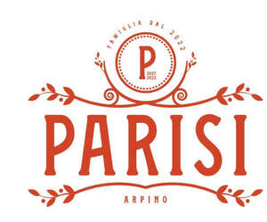

Trade Mark Journal No.2025/029 18 July 2025
UK00004228804 3 July 2025 (3,4,5,8,21,24,29,30,33)

- Class 3
- Skincare products; non-medicated creams; non-medicated skin creams; beauty creams for body care; bath creams; cleansing creams; moisturiser; exfoliator; face mask; hair care creams; skin cleansing cream; sun creams; skin toners; facial toners [cosmetic]; facial cleansers; wipes impregnated with a skin cleanser; perfumes; fragrances; air perfuming oils and preparations; cosmetics; essential oils; hair lotions and preparations for care of and styling the hair; toiletries; shampoos; soaps; creams and lotions for the skin; beauty products and preparations, beauty masks, beauty treatments and facial packs; sun-tanning preparations; cotton wool for cosmetic use; cosmetic tissues; emery paper; abrasive boards; hand and nail care preparations; make up; foundation; eye shadow; mascara; blusher; lipstick; lip liner; lip gloss; lip balm; make-up primer; nail primer (cosmetics); bronzer; eye liner; concealer; skincare products containing olive oil; non-medicated creams containing olive oil; non-medicated skin creams containing olive oil; beauty creams for body care containing olive oil; bath creams containing olive oil; cleansing creams containing olive oil; moisturiser containing olive oil; hair lotions and preparations for care of and styling the hair containing olive oil; shampoos containing olive oil; soaps containing olive oil.
- Class 4
- Candles; aromatherapy fragrance candles; beeswax for use in the manufacture of cosmetics; beeswax for use in the manufacture of ointments; beeswax for use in the manufacture of candles; candles and wicks for candles for lighting; candles; perfumed candles; tallow candles; tapers; tea light candles; votive candles; wicks for candles; wicks for candles for lighting.
- Class 5
- Dietary supplements; nutritional supplements; Dietary supplement drink mixes; Powdered nutritional supplement drink mix and concentrate; Drinks for weight-loss; dietetic substances, not adapted for medical use; nutritional supplements; minerals and mineral salts; preparations consisting of vitamins and/or minerals; medicinal herbs.
- Class 8
- Gardening accessories; agricultural, gardening and landscaping tools; garden forks; gardeners' knives; gardening scissors; gardening shears; gardening trowels; gardening tools (Hand operated -); three-prong cultivators for gardening; trowels [gardening]; cutlery; knives; forks; spoons; pizza cutters; non-electric can-openers; pestle and mortars; scissors; hand tools and implements for culinary and kitchen use; silverware; serving utensils; knives, forks and spoons; dinner services and dinnerware comprising knives, forks and/or spoons; tables services comprising knives, forks and/or spoons; table cutlery; chefs' knives, forks and spoons.
- Class 21
- Mortars and pestles for kitchen use; nutcrackers; cooking utensils, namely, pot and pan scrapers, rolling pins, spatulas, turners, whisks, graters, tongs and sieves, mixing spoons, slotted spoons, basting spoons; serving utensils, namely, serving scoops; dinnerware, namely, plates, bowls; bottle openers; aluminium bakeware; aluminium cookware; bakeware; baking dishes; baking dishes made of earthenware; baking dishes made of glass; baking mats; baking dishes made of porcelain; baking tins; beer jugs; beer mugs; beverage glassware; bowls; bread boards; bread boxes; cake moulds; cake brushes; candy boxes; cheese graters; chopsticks; sushi rolling mat, bento boxes; cocktail shakers; coffee cups; colanders; coffee grinders; cookery moulds; cooking pot sets; cooking utensils; corkscrews; cups; mugs; decanters; dishware; earthenware; egg cups; egg poachers; ice cube trays; jugs; lunchboxes; mugs; pepper mills; pepper pots; salt mills; salad spinners; sandwich boxes; sushi rolling equipment; tableware, cookware and containers; utensil jars; paper cups; paper plates; woks; picnic crockery; picnic boxes; fitted picnic baskets; nutcrackers; bottle openers; knife blocks; serving utensils; gardening gloves.
- Class 24
- Fabrics; Furniture coverings of textile; Household linen; Curtains of textile or plastic; Cotton fabrics; Covers for cushions; Tablecloths, not of paper; Table linen, not of paper; Table runners, not of paper; Place mats of textile; Tablemats of textile; Cloth; Bath linen, except clothing; Blankets for household pets; Towels; Face towels of textile; Picnic blankets; Velvet; Cot bumpers [bed linen]; Bed valances; Bed clothes and blankets; Bed covers; Table napkins of textile; Wall hangings of textile; Woollen cloth; Pillowcases; Pillowcases [pillow slips]; Fabrics for manufacturing garden furniture.
- Class 29
- Olive oil; Olives, preserved; cooked olives; dried olives; extra virgin olive oil; olive paste; olive puree; olives stuffed with almonds; olives stuffed with cheese; olives stuffed with red peppers; olives stuffed with red peppers and almonds; preserved olives; processed olive puree; Meat, fish, poultry and game; Meat extracts; Preserved, frozen, dried and cooked fruits and vegetables; Jellies, jams, compotes; Eggs; Milk and milk products; Edible oils and fats; Prepared and ready meals predominately made from meat, fish, seafood or vegetables; Almonds, ground; Anchovies; Apple purée; Bacon; Beans, preserved; Black pudding; Broth; Broth concentrates; Butter; Butter cream; Caviar; Charcuterie; Cheese; Cocoa butter; Coconut butter; Coconut, desiccated; Coconut fat; Coconut oil; Compotes; Condensed milk; Corn oil; Cranberry sauce [compote]; Cream [dairy products]; Croquettes; Dates; Edible fats; Edible oils; Fish fillets; Fish, not live; Fish, preserved; Frozen fruits; Fruit-based snack food; Fruit peel; Fruit, preserved; Fruit salads; Gelatine; Gherkins; Ham; Herrings; Hummus; fruit jellies; Lentils; Liver; Liver pate; Lobsters, not live; Margarine; Marmalade; meat pates; vegetable pates; Meat jellies; Meat, preserved; Milk products; Mushrooms, preserved; Mussels, not live; Nuts; Pulses; Palm oil for food; Peanut butter; Peanuts; Peas, preserved; Pickles; Pork; Potato crisps; Poultry; Prawns; garlic; Processed seeds; Raisins; Rape oil; Sausages; Sesame oil; Shellfish; Shrimps; Soups; Soya beans, preserved, for food; Soya milk; Suet; Tofu; Tomato purée; Tripe; Truffles, preserved; Vegetable juices for cooking; Vegetable soup preparations; Vegetables, cooked; Vegetables, dried; Vegetables, preserved; Vegetables, tinned; Yogurt; preparations made of soya; milk shakes; milk powder for foodstuffs; dried foodstuffs; drinking yogurts; dairy products; potato snacks; fruit snacks, meat snacks; desserts made from milk products; fruit desserts; dairy desserts; dips; ready cooked meals.
- Class 30
- Pizzas; Pasta; Pasta sauce; Tapioca and sago; Flour and preparations made from cereals; Bread, pastry and confectionery; Ices; Sugar, honey, treacle; Yeast, baking-powder; Salt; Mustard; Vinegar, sauces (condiments); Spices; Ice; Almond confectionery; Almond paste; Aniseed; Aromatic preparations for food; Artificial coffee; Baking powder; Baking soda; Barley meal; Bean meal; Bread; Bread rolls; Breadcrumbs; Buns; Cake frosting [icing]; Candy; Capers; Cereal bars; Cereal-based snack food; Cereal preparations; Cheeseburgers; Chewing gum; Chocolate-based beverages; Chocolate mousses; Chutney and pastes; Cocoa; Cocoa-based beverages; Coffee; Coffee-based beverages; Condiments; Cookies; Cooking salt; Cooking sauces; Corn flakes; Corn meal; Couscous; Crackers; Crisp breads; Custard; Dessert mousses; Dough; Dressings for salad; Flavourings; Fruit sauces; Garden herbs, preserved; Gingerbread; Honey; Ice cream; Iced tea; Infusions, not medicinal; Ketchup; Marinades; Marzipan; Mayonnaise; Meat gravies; Meat pies; Muesli; Natural sweeteners; Noodle-based prepared meals; Noodles; Oat-based food; Oat flakes; Oatmeal; Palm sugar; Pancakes; Pasties; Pastry; Peanut confectionery; Pepper; Peppermint sweets; Pesto; Pies; Popcorn; Pralines; Puddings; Quiches; Ravioli; Tomato Relish; sweet corn relish; Ready-made sauces; Rice cakes; Rusks; Salad dressings; Sago; Sandwiches; Sauces [condiments]; Seasonings; Semolina; Sorbets; Soya sauce; Spaghetti; Spring rolls; Sugar; Sushi; Tacos; Tapioca; Tarts; Tea; Tea-based beverages; Thickening agents for cooking foodstuffs; Tomato sauce; Tortillas; Vinegar; Vegetable purees [sauces]; Waffles; Wheat flour; Yeast; confectionery; non-medicated confectionery; frozen confectionery; sugar confectionery; chocolate; chocolate confections; confectionery in frozen form; confectionery bars; lozenges; pastilles; sweets; ice lollies; chocolates; chocolate spread; biscuits; cakes; pastries; wafers; snack foods; ice cream and ice cream products, chilled and frozen confections and desserts.
- Class 33
- Alcoholic wines; spirits and liqueurs; alcopops; alcoholic cocktails.
Kelly Ann Parisi
Representative: Sheridans Solicitors LLP